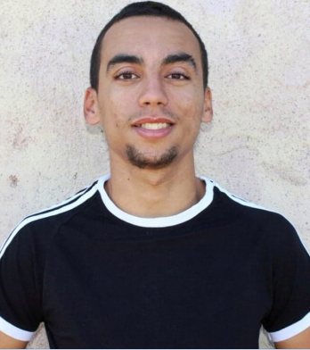

BAAZIZ ELMEHDI

Un jeune homme ambitieux , et spontané.
Information personnelles
- 24 ans
- 499 rue de la pacaterie, 91400 ORSAY
- +33605521761
- baazizelmehdi@gmail.com
Diplômes et attestations
2020 - : Diplôme d'ingénieur en Instrumentation (en cours)
2018 - 2020 : Master spécialisé en Instrumentation Biomédical
2015 - 2018 : Licence Physique Moderne
Compétences
-Langues : Arabe – Français – Anglais (Avancé) - Japonais .
-Logiciels maîtrisés : Matlab, R, Labview , .
-Programmation : Language C/C++, ASSEMBLY, HTML, VHDL, Python , Machine Learning.